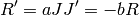

Level: Medium (scientific libraries, plotting)
Illustrates: Graficación de mapas vectoriales. Solución numerica de ecuaciones diferenciales.
Un modelo simple para la dinamica de los asuntos del amor es el siguiente:
Romeo y Julieta están enamorados, pero Julieta tiende a perder interes cuando Romeo se muestra demaciado interesado. Por el contrario, Romeo se anima cuando Julieta le corresponde. Llamemos R(r) la intensidad del amor de Romeo por Julieta y J(t) la de Julieta por romeo.
Los valores positivos de R y T simbolizan amor, mientras que los negativos son odio, y el cero es indiferencia. El modelo para esta relación es
(1)
¿Como evoluciona la relación entre nuestros amantes al paso del tiempo? Podemos responder cualitativamente a esta pregunta sin necesidad de dar una respuesta general al sistema dinámico. Esto se logra a travez un un diagrama de flujo. Este consiste en graficar la tendencia al cambio del estado de la relación en el tiempo (R’,J’) sobre el plano de fase (R,J). Para cada punto (R,J) se halla el valor del gradiente en dicho punto (R’,J’), y ubicamos una flecha simbolizando dicho gradiente, donde el tamaño de dicha flecha simboliza la intensidad del gradiente, y la punta esta direccionada en el sentido de este.
Grafique y analice el diagrama de flujo (hacia donde va la relación de Romeo y Julieta).
Ahora considere un caso mas interesante. El amor de nuestros heroes no solo se ve afectado por el sentimiento recibido, sino que ademas se ve modificado por el sentimiento propio. .. math:
R'= aR +bJ
J'= cR +dJ
Que ocurre cuando nuestra historia evoluciona si, para cierta personalidad de Julieta, Romeo es: A) Un amante obsesivo: a>0, b>0 B) Un amante cauteloso: a<0, b>0
Donde Julieta puede ser a su vez cautelosa o apasionada (A o B).
i.e. Grafique y analise el sistema diagrama de flujo del sistema dinamico.
Solución: Este modelo constituye un sistema dinamico bidimencional, donde x=(R,J) sigue la ecuación de evolución x’=Ax, donde A=( (a,b), (b,c) ) es la matriz de evolución.
La idea es obener una solución cualitativa del sistema, sin necesidad de obtener una solución general al problema.
El sistema x’=Ax asigna un vector de velocidades para cada punto (R,J).
Mediante la graficación del campo vectorial x’ en el plano de face (R,J) podemos ver como evoluciona una solución dada al sistema dinamico, cuando se tienen condiciones iniciales (Ro,Jo). Y esto nos dice si la relación tiende al amor o al odio, o un ciclo eterno de amor y desamor.
En matplotlib contamos con herramientas para este tipo de analisis. Busquen documentación sobre la función quiver de matplotlib.
Podemos proseguir graficando la evolución temporal de el sistema bajo condiciones iniciales (Ro,Jo). Para ello, el scipy nos provee del submodulo integrate, donde encontramos diversas funciones de integración. investiguen odeint